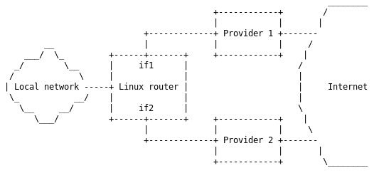

Multiple Uplink Routing
Archivierte Anleitung
Dieser Artikel wurde archiviert, da er - oder Teile daraus - nur noch unter einer älteren Ubuntu-Version nutzbar ist. Diese Anleitung wird vom Wiki-Team weder auf Richtigkeit überprüft noch anderweitig gepflegt. Zusätzlich wurde der Artikel für weitere Änderungen gesperrt.
Artikel für fortgeschrittene Anwender
Dieser Artikel erfordert mehr Erfahrung im Umgang mit Linux und ist daher nur für fortgeschrittene Benutzer gedacht.
Zum Verständnis dieses Artikels sind folgende Seiten hilfreich:
Diese Anleitung basiert auf diesem Howto  auf lartc.org und erklärt die Benutzung mehrerer Internetprovider über einen Computer.
auf lartc.org und erklärt die Benutzung mehrerer Internetprovider über einen Computer.

Was ist nach dieser Anleitung möglich?
Es werden mehrere (2 laut dieser Anleitung) Internetverbindungen von einem Rechner angesprochen.
Falls eine Verbindung ausfällt, wird ohne Unterbrechung die Zweite weiterbenutzt.
Bei bestimmter Verwendung kann der Uplink beider Leitungen voll genutzt werden.
Was ist nach dieser Anleitung nicht möglich?
Kanalbündelung (Bonding) im klassischen Sinne.
Die Anfragen, die der Rechner an das Internet stellt, werden nacheinander auf beide Uplinks verteilt, das heißt, dass häufige Anfragen zu ein und derselben Internetseite meist über den selben Provider abgewickelt werden.
Verbindungsteilung¶
Als erstes bearbeitet man die Datei /etc/iproute2/rt_tables in einem Editor mit Root-Rechten [2]. Dort erstellt man zwei neue Routing-Tabellen "T1" und "T2", indem man die Zeilen
1 T1 2 T2
an das Dateiende anfügt und die Datei speichert.
Definitionen zum Umgang mit den Variablen¶
| IF | Name der Netzwerkschnittstelle | z.B. eth0 |
| IP | IP - Adresse der Netzwerkschnittstelle | z.B. 192.168.0.22 |
| P | IP - Adresse des Gateways | z.B. 192.168.0.1 |
| P_NET | Adressbereich, in dem sich P befindet | z.B. 192.168.0.0 |
| P0_NET | Lokaler Adressbereich | z.B. 127.0.0.0 |
| IF0 | Lokale Netzwerkschnittstelle | z.B. lo |
Alle nötigen Informationen können der Ausgabe [1] von
ifconfig
entnommen werden.
Deklaration¶
Da man für die Befehle unten dauerhaft Root-Rechte benötigt, sollte man ein Root-Terminal [1] öffnen (oder andernfalls sudo vor alle Befehle anstellen). Nun legt man oben genannte Variablen fest, um später Tipparbeit zu sparen. Die Platzhalter [] müssen entsprechend angepasst werden.
export IF1=[eth0] export IP1=[192.168.0.22] export P1=[192.168.0.1] export P1_NET=[192.168.0.0] export IF2=[eth1] export IP2=[192.168.1.33] export P2=[192.168.1.1] export P2_NET=[192.168.1.0] export IF0=[lo] export P0_NET=[127.0.0.0]
Wenn alle Werte korrekt übernommen sind, können folgende Befehle einfach in das Terminal kopiert werden.
Routing¶
Eventuell müssen noch vorhandene Default-IP-Routen gelöscht werden. Dies geschieht per
ip route delete default
Achtung!
Die Internetverbindung geht hierbei verloren und ist erst nach einem Neustart oder dem erneuten Festlegen wieder verfügbar.
Bei mehreren Default-Routen muss der Befehl mehrmals ausgeführt werden. Wieviele vorhanden sind, lässt sich mittels
ip route show
feststellen. Nun wird das Routing in den Tabellen "T1" und "T2" festgelegt:
ip route add $P1_NET dev $IF1 src $IP1 table T1 ip route add default via $P1 table T1 ip route add $P2_NET dev $IF2 src $IP2 table T2 ip route add default via $P2 table T2
Um den korrekten Ursprung der Pakete zu bewahren, nutzt man Folgendes:
ip route add $P1_NET dev $IF1 src $IP1 ip route add $P2_NET dev $IF2 src $IP2
Nun wird eingestellt, welche Routing-Tabellen genutzt werden:
ip rule add from $IP1 table T1 ip rule add from $IP2 table T2
Folgende Befehle stellen sicher, dass der eingehende Verkehr über ein bestimmtes Interface auch von diesem beantwortet wird:
ip route add $P0_NET dev $IF0 table T1 ip route add $P2_NET dev $IF2 table T1 ip route add 127.0.0.0/8 dev lo table T1 ip route add $P0_NET dev $IF0 table T2 ip route add $P1_NET dev $IF1 table T2 ip route add 127.0.0.0/8 dev lo table T2
Datenaufteilung¶
Anstelle eines Providers, der als Standard festgelegt wird, wird der Datenstrom nun über beide verteilt. Dies ist also der eigentliche und kürzeste Teil der Arbeit.
ip route add default scope global nexthop via $P1 dev $IF1 weight 1 nexthop via $P2 dev $IF2 weight 1
Die weight-Kriterien können je nach Bedarf angepasst werden. Soll z.B. Provider I zu 3/4 und Provider II zu 1/4 genutzt werden, so wären weight 75 und weight 25 einzustellen.
Automatisierung¶
Die Einstellungen gehen nach jedem Neustart verloren, deshalb ist es sinnvoll sie mit einem Skript zu automatisieren. Außerdem bekommt man von seinem Provider auch oft nur dynamische IPs zugewiesen. Das folgende Skript parst die nötigen Informationen automatisch. Man muss lediglich die Namen der Schnittstellen ändern. Man erstellt dazu eine neue Datei in einem Editor [2] mit folgendem Inhalt:
1 2 3 4 5 6 7 8 9 10 11 12 13 14 15 16 17 18 19 20 21 22 23 24 25 26 27 28 29 30 31 32 33 34 35 36 37 38 39 40 41 | #!/bin/sh export IF1="raub0"; ### <<< Hier ändern export IP1=`ifconfig $IF1 | grep "inet Adresse:"|cut -d":" -f2|cut -d" " -f1`; export P1="`echo $IP1| cut -d"." -f 1-3`.1"; export P1_NET="`echo $IP1| cut -d"." -f 1-3`.0" export IF2="eth1"; ### <<< Hier ändern export IP2=`ifconfig $IF2 | grep "inet Adresse:"|cut -d":" -f2|cut -d" " -f1`; export P2="`echo $IP2| cut -d"." -f 1-3`.1"; export P2_NET="`echo $IP2| cut -d"." -f 1-3`.0" export IF0="lo"; export P0_NET="127.0.0.0"; ip route delete default; ip route delete default; ip route add $P1_NET dev $IF1 src $IP1 table T1; ip route add default via $P1 table T1; ip route add $P2_NET dev $IF2 src $IP2 table T2; ip route add default via $P2 table T2; ip route add $P1_NET dev $IF1 src $IP1; ip route add $P2_NET dev $IF2 src $IP2; ip rule add from $IP1 table T1; ip rule add from $IP2 table T2; ip route add $P0_NET dev $IF0 table T1; ip route add $P2_NET dev $IF2 table T1; ip route add 127.0.0.0/8 dev lo table T1; ip route add $P0_NET dev $IF0 table T2; ip route add $P1_NET dev $IF1 table T2; ip route add 127.0.0.0/8 dev lo table T2; ip route add default scope global nexthop via $P1 dev $IF1 weight 1 nexthop via $P2 dev $IF2 weight 1 echo "done."; exit |
In dem Skript müssen die Variablen entsprechend angepasst werden. Anschließend speichert man die Datei ab und macht sie ausführbar [3]. Das Skript lässt sich im Terminal mittels
sudo /PFAD/ZUM/SKRIPTNAMEN
starten. Die Automatisierung sollte über die rc.local-Datei geschehen. Dabei ist Folgendes einzufügen:
/PFAD/ZUM/SKRIPTNAMEN
Danach wird das Skript bei jedem Systemstart automatisch ausgeführt.
- Erstellt mit Inyoka
-
 2004 – 2017 ubuntuusers.de • Einige Rechte vorbehalten
2004 – 2017 ubuntuusers.de • Einige Rechte vorbehalten
Lizenz • Kontakt • Datenschutz • Impressum • Serverstatus -
Serverhousing gespendet von